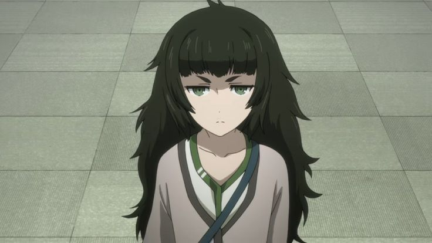

Rintaro Okabe (Okarin)
The self-proclaimed mad scientist and the main protagonist. He accidentally discovers time travel and becomes entangled in a complex web of events.
Labmem 1
Mayuri Shiina (Mayushii)
Okabe's childhood friend and a sweet, caring girl. She plays an essential role in the lab and has a deep bond with Okabe.
Labmem 2

Itaru Hashida (Daru)
The resident hacker and programmer. Daru is a skilled computer expert and often provides comic relief.
Labmem 3
Kurisu Makise (Christina)
A brilliant neuroscientist who joins the lab. She becomes a key figure in unraveling the mysteries of time travel.
Labmem 4
Suzuha Amane (Part-timer)
A mysterious girl who claims to be John Titor, a time traveler from the future. She has her own agenda related to the lab's experiments.
Labmem 5

Luka Urushibara (Lukako)
A gentle and kind-hearted individual who struggles with their gender identity. Luka is a close friend of Mayuri.
Labmem 6
Moeka Kiryu (Shining Finger)
A reclusive woman who communicates primarily through text messages. She becomes involved in the lab's activities.
Labmem 7
Faris NyanNyan (Feyris)
The owner of the maid cafe "May Queen Nyan-Nyan." She has a fascination with cat-related things.
Labmem 8

Maho Hiyajo
A brilliant neuroscientist and Kurisu's colleague. She becomes a key ally in Okabe's quest for answers.
Labmem 9
The Lab of Gadgets, located in Akihabara, Tokyo, serves as the central hub for the characters in Steins;Gate. Here, they invent quirky gadgets, conduct experiments, and unravel the mysteries of time travel. Led by the eccentric self-proclaimed mad scientist Rintaro Okabe, the lab's members include loyal friend Mayuri Shiina, hacker Itaru Hashida, and brilliant neuroscientist Kurisu Makise. Their cozy yet chaotic space becomes the backdrop for scientific intrigue, bonding, and alternate timelines.
In the sequel, Steins;Gate 0, we encounter new Lab Members, including neuroscientist Maho Hiyajo, mysterious researcher Yuki Amane, and the AI version of Kurisu, Amadeus. Together, they navigate parallel universes, emotional struggles, and the quest for answers in a world of time-traveling possibilities.